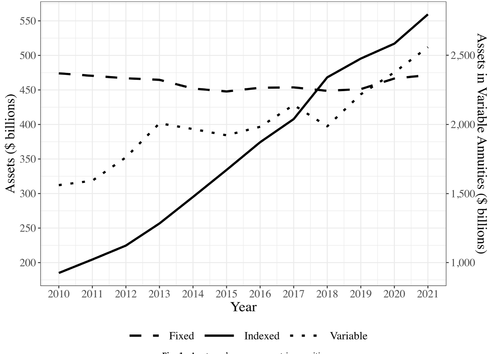
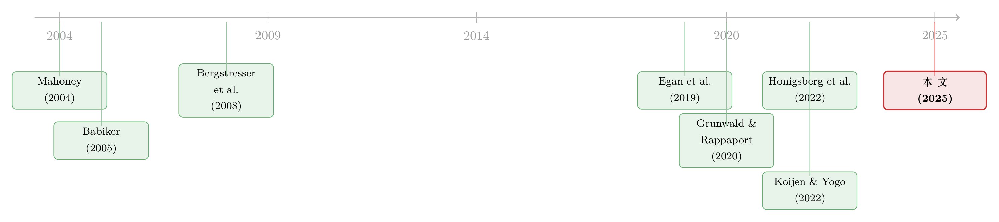

被赶走的「坏掮客」去了哪里？——监管缝隙里的打地鼠游戏
本文读的是 Honigsberg, Hu & Jackson (2025, Journal of Financial Economics)：美国对金融顾问的监管是「碎片化」的——FINRA、SEC、州保险监管各管一摊。当 FINRA 在 2018–2019 年出台规则、想把有劣迹的「坏掮客」挤出经纪行业时，这些人确实大批退出了 FINRA，但其中 98% 转身就以「保险代理人」的身份继续留在金融服务业。监管没有把坏人赶出市场，只是把他们赶进了一个监管更松的角落。
1 一个「流浪警察」的故事
先讲一个人。
他叫 Terrence Reid Pipenhagen。2008 年，FINRA（美国金融业监管局，Financial Industry Regulatory Authority）把他「除名」了——禁止他以任何身份与任何 FINRA 注册的经纪商发生关联。理由很重：在亏光了客户的钱之后，他给客户寄去伪造的账户对账单，好让他们不去赎回那些早已被掏空的投资。两年后，连商品期货交易委员会（CFTC）也对他下了手，罚款十五万美元，并要求他永不得申请 CFTC 注册。两个联邦监管者，先后把他逐出了各自的地盘。
故事到这里，听上去像是一个「市场纪律」起作用的标准结局：坏人作恶，被抓，被赶走。
可是，截至 2022 年 7 月，佛罗里达州的代理人服务部门显示，Pipenhagen 持有五类保险牌照，可以销售人寿、健康保险，以及——可变年金（variable annuities）。更耐人寻味的是，他的保险执照可以追溯到 1978 年。也就是说，早在被联邦监管者除名之前，他就已经在保险这一侧备好了退路。被赶出经纪行业之后，他什么都没改变，只是「继续做保险」而已。
这就引出了本文真正想问的问题。在劳动经济学里，有一个被反复研究的现象，叫做「流浪警察（wandering police officer）」——一个警察因为劣行被一个警局开除，却又在另一个警局找到了工作（Grunwald and Rappaport, 2020）。后来人们发现，这种「换个地方接着干」的模式，并不只存在于警察身上，在教师、神职人员、乃至金融顾问中同样存在（Honigsberg et al., 2022）。
「流浪」本身未必是坏事。如果一个人保住了自己的人力资本和销售技能，却转去做风险更低的工作，那这种流动是有效率的。但如果「流浪」只是换一身马甲、继续做同样高风险的事，同时躲开了原来的市场纪律，那它就是一种监管套利。本文的全部张力，就在这两种可能性之间。
2 把「金融顾问」按职能、而非按监管者重新定义
要回答这个问题，作者先做了一件别人没做过的事：把分散在各个监管体系里的金融顾问拼成一张完整的地图。
过去研究金融顾问劣迹的文献，几乎都只盯着一类人——BrokerCheck 数据库里、主要由 FINRA 监管的经纪人（broker，例如 Egan et al., 2019, 2022; Dimmock et al., 2018; Griffin et al., 2019）。这就好比只在路灯下找钥匙：数据好拿，但看到的只是整张图的一角。本文的贡献，是按职能而不是按监管者来定义「金融顾问」，从而把四类人放进同一个框架：
- FINRA 经纪人：在券商工作的注册代表，主要受 FINRA 监管，超过一百万人；
- SEC 注册的投资顾问代表（investment adviser representatives）：约四十万人；
- 州注册的投资顾问代表：约两万人；
- 州注册的保险代理人（insurance producers）：超过两百万人，是四类里规模最大、过去十年增长最快的一类。
关键在于，这四块地盘之间有大量重叠。作者把不同来源的数据按个人合并后发现：在任何一年，大约 42% 的 FINRA 经纪人同时还持有至少一种其他注册。换句话说，「经纪人」和「保险代理人」远不是两拨人，而是有近一半交集的同一拨人。
为什么会有这么大的重叠？答案藏在「年金」这个产品里。一个固定年金（fixed annuity）历来被视为保险产品；按照《多德-弗兰克法案》，指数年金（indexed annuity）也被划为保险——尽管它的收益其实由一篮子证券的回报驱动。而可变年金则被法院认定为证券，必须在 SEC 注册。于是，一个想卖可变年金的人，往往既需要保险牌照、也需要证券牌照。证券与保险之间那条线，本来就越来越模糊。
这条模糊的线，正是后面一切故事发生的舞台。下图（图 1）给了一个直观的注脚：自 2010 年《多德-弗兰克法案》把固定指数年金划归保险监管以来，这类年金的管理资产规模翻了三倍多，到 2025 年已超过 $550 billion。一个庞大的、监管相对宽松的资金池，就这样长了出来。

Figure 1: Assets under management in annuities
3 第一个发现：劣迹之后，谁在「退出」FINRA？
接着，一个自然的问题是：金融顾问在犯错之后，会不会主动挑选一个监管更松的体系去躲？
Egan et al. (2019) 早就发现，FINRA 经纪人在出现劣迹后，更容易撤销自己的 FINRA 注册。但本文指出，这个「平均效应」其实被一类人主导了——那些同时注册了保险的双重身份者。
作者把样本拆开看。所谓「严重劣迹（serious misconduct）」，定义为刑事或监管处罚、民事判决、以及在被指控不当行为后被雇主解雇。结果是这样的：
- 一个不持有其他牌照的「纯 FINRA 经纪人」，在严重劣迹发生后的次年，撤销 FINRA 注册的概率只上升 1.6 到 3.3 个百分点；
- 而一个同时注册了保险的经纪人，撤销 FINRA 注册的概率几乎上升 36 个百分点。
两者一比，这些双重身份者在严重劣迹之后退出 FINRA 的概率，是纯经纪人的 10 到 20 倍。
这个对比非常说明问题。它告诉我们：FINRA 经纪人「犯错就走」并不是因为他们金盆洗手离开了金融业，而是因为他们早就有一条通往保险的现成退路。有退路的人，才走得这么决绝。
这里要小心一个推断陷阱。「退出 FINRA」在过去常被默认等同于「退出金融服务业」。本文最朴素、也最重要的一个事实纠正是：在 2012–2022 年间撤销 FINRA 经纪牌照、且至今仍在 FINRA 体系之外的 456,906 人中，约 26.5% 仍注册在另一个金融监管者名下。退出 FINRA，常常只是换了个门牌号。
4 但真正关键的一步：他们去做了什么？
到这里，怀疑论者会反驳：就算这些人去了保险，那也可能是「转去做低风险工作」啊——卖卖车险、家财险，把高风险的证券生意留在身后，这不正是有效率的人力资本再配置吗？
于是，本文最关键的一步，是去看这些转去保险的前 FINRA 经纪人到底在卖什么、到底还犯不犯错。作者做了两个检验。
第一，看产品。 这些转去保险的前经纪人当中：
- 92% 有资格销售年金；
- 76% 专门有资格销售可变年金；
- 却不到 15% 有权销售人身或财产险（比如家财险）。
这个分布几乎是决定性的。它说明，这些人并没有转去做保险里「降低风险」的传统生意（车险、家财险那一侧），而是扎堆留在了保险里最像证券、最像资产管理的那一侧——年金。换句话说，他们卖的还是高风险、高费率、高佣金的复杂金融产品，只是这一次，监管他们的不再是 FINRA，而是各州的保险监管者。
第二，看行为。 作者发现，有保险劣迹史的人，在保险体系里继续犯错。而且，当一个州的保险监管者越「宽松」时（用该州监管预算、以及罚款总额相对于代理人数量来衡量），个人就越倾向于撤销 FINRA 注册、转去做保险；在经纪人与保险代理人薪酬差距越小的州也是如此（经纪人通常挣得比保险代理人多，差距小意味着「降级」的代价小）。
把这两块拼在一起，结论就很硬了：那些有劣迹史、转去保险的前经纪人，并没有改邪归正，而是在一个监管更松的地方继续做着相似的事。「流浪」在这里更接近套利，而不是有效率的转岗。这一点，和金融顾问劣迹具有顽固持续性的既有证据是一致的（关于金融犯罪的可预防性与教育的作用，可参见《一门高中理财课，能让金融犯罪少三成？》）。
5 反转：监管想把坏人赶走，结果只是把他们赶进了暗处
故事到这里其实还只是「描述」。本文最漂亮的一击，是抓住了一次准自然实验，把「监管缝隙」从相关性推向了因果。
2018 年，FINRA 提议：券商在雇佣有大量劣迹史的经纪人之前，必须先经过 FINRA 一道昂贵且耗时的审批。2019 年，FINRA 又提议：把那些「曾受处分经纪人数量异常之高」的公司列为「受限公司（restricted firm）」，并要求其中一些公司预留一笔储备金，专门用于赔付受害客户——这条惩罚之重，以至于一家行业博客说它形同「把这些公司逐出行业」。这两套规则在 2021 年基本照原样落地。
这给了作者一个清晰的识别策略。本文用的是双重差分（difference-in-differences, DiD）：
- 处理组：被规则点名的那批 FINRA 经纪人——即符合规则中「坏掮客」定义的人；
- 控制组：在同一家公司、同一个县、同一年工作，资历与注册情况相似、同样注册了保险、也可能有劣迹记录，但不完全符合规则里「坏掮客」精确定义的经纪人。
这组对照设计得很讲究：它把公司层面、地域层面、年份层面、以及「是否双重注册」这些混杂因素都尽量摁住了，只留下「是否被规则精确命中」这一个差异。识别上的「平行趋势」诉求，就是这两组人在规则提出之前、退出 FINRA 的行为应当走势相近。
结果与规则的初衷一致：2018 年之后，符合「坏掮客」定义的经纪人撤销注册的概率显著上升。规则确实「奏效」了——它真的把这批人挤出了 FINRA。
但反转就在下一句：这一退出模式几乎完全由那些同时注册了保险的经纪人贡献。作者顺着这批离开 FINRA 数据库的人继续追踪，发现截至成稿之时，他们当中 98% 仍然是活跃的保险代理人。
于是我们得到了全文的核心图景：
规则的「净效果」并不是把坏人赶出金融服务业，而是把他们从一个监管密集的体系（FINRA：每年抽查过半的券商、有仲裁机制、有强制披露的 BrokerCheck），推进了一个监管稀疏的体系（各州保险）。这套规则最主要的实际后果，恰恰是让这批被点名的经纪人受到的监督比以前更少了。监管者和坏人之间，玩的是一场停不下来的「打地鼠（whack-a-mole）」。
这正是「监管缝隙（regulatory leakage）」的精髓：当一项监管存在可供规避的出口时，它的净效果是不确定的。这个道理在别的领域早有先例——《京都议定书》把发达国家的高耗能生产挤到了别处（Babiker, 2005），对商业银行收紧资本金要求则催肥了影子银行信贷（Gebauer and Mazelis, 2019）。本文是第一次在金融顾问这个场景里，把这种「按下葫芦浮起瓢」的机制讲清楚。
6 文献脉络
把这篇论文放回它所处的研究谱系，会看得更清楚。
最早的一条线，是「利益冲突」。 金融产品不像普通商品，它常常通过有自身利益的中介来销售，于是中介有动机把客户引向佣金高、却未必合适的产品。这条线上的实证证据很厚：Mahoney (2004)、Bergstresser et al. (2008)、Christoffersen et al. (2013)、Chalmers and Reuter (2020) 反复记录了利益冲突如何把客户推向更差、更贵的产品。这是「为什么要监管金融顾问」的底层动机。
接着，是「市场纪律」这条线。 Egan et al. (2019) 用 BrokerCheck 数据证明，劣迹信息是可预测未来劣迹的、市场对坏经纪人是有惩罚的（约一半有劣迹的经纪人会退出 FINRA）。Honigsberg and Jacob (2021)、Dimmock and Gerken (2012) 等则进一步刻画了披露机制本身的效力与局限。这条线给人的印象是：纪律在起作用。
然后，是「流浪」这条线。 Grunwald and Rappaport (2020) 在警察身上发现了「换个地方接着干」的模式，Honigsberg et al. (2022) 把它推广到了教师、神职人员和金融顾问。它提示我们：所谓「退出」，可能只是换了一个监管者。

本文正处在后两条线的交汇处。 它一方面继承了 Egan et al. (2019) 的市场纪律问题，另一方面用 Honigsberg et al. (2022) 的「流浪」视角，把研究对象从「FINRA 一隅」扩展到「整张监管地图」。它得出的结论，是对「市场纪律有效」这一印象的修正：是的，有劣迹的 FINRA 经纪人退出率很高，但其中很多人并没有离开金融业，只是漂移进了保险。再叠加 Charoenwong et al. (2019) 关于「SEC 监管严于州监管」的发现、以及 Koijen and Yogo (2022) 对可变年金规模（2015 年占美国寿险负债的 35%、约 $1.5 trillion）的刻画，一幅完整的「监管套利地形图」就成形了。
7 评论与延伸（Q&A + 研究方向）
(a) 几个可能的疑问
Q：这篇论文和经典的「监管套利」研究有什么不同？
经典的监管套利文献多在机构层面展开（比如资本金要求把信贷挤向影子银行）。本文的新意在于把套利落到了个人劳动力层面：是「人」带着他的销售技能、客户关系和劣迹史，在不同监管体系之间迁移。它衡量的不是资产负债表的腾挪，而是「坏人」这一稀缺（且有害）的人力资本的再配置。
Q：DiD 的识别可信吗？会不会是规则之外的行业趋势在驱动退出？
作者的控制组设计已经相当克制——同公司、同县、同年、相似资历、且同样是双重注册者，只在「是否精确符合坏掮客定义」上有别。这把大量共同趋势都吸收掉了。主要残余担忧有两点：一是「坏掮客」定义本身基于劣迹历史，处理组天然是高风险人群，若高风险者恰好独立地、加速地向保险迁移，会与规则效应混淆；二是规则的预期效应——业界博客早在规则正式落地前就在热议，券商可能提前清退（Braswell, 2022 记录了「公司开除高风险经纪人」的现象），这会让事件时点变得模糊。
Q：「退出 FINRA 的人 98% 在保险」这个数字，会不会被定义放大了？
要分清两个数。「98%」针对的是被规则点名、且退出了 FINRA的那批「坏掮客」，是一个条件极强的子样本，所以比例极高。而面向全体退出者时，作者给的是更温和的
26.5%仍注册在另一金融监管者名下。两个数并不矛盾：它说明越是「坏」、越是被规则盯上的人，越是有保险这条退路、也越会用它。
Q：转去保险，难道不可能真的是「降低风险」吗？毕竟保险听起来比炒证券稳当。
这正是作者用「卖什么产品」回击的地方。如果是降风险，应该看到他们转去卖车险、家财险；但实际是
92%卖年金、76%卖可变年金，不到15%碰人身财产险。年金（尤其可变年金）在经济实质上更接近证券与资产管理，而非传统的「风险转移」保险。所以「转去保险」在这里基本等于「换个监管者，继续卖复杂投资品」。
Q：为什么偏偏是保险，而不是 SEC 注册的投资顾问那条路？
因为监管强度的梯度。已有证据显示 SEC 监管严于州监管（Charoenwong et al., 2019），而州保险监管的密集度、披露与仲裁机制又普遍弱于 FINRA。本文还直接验证了这种「就低不就高」：州保险监管越宽松、经纪与保险的薪酬差距越小，个人就越倾向于退出 FINRA 转向保险。水往低处流，坏人往监管的洼地流。
Q：那政策含义是不是「干脆别管了」？
恰恰相反。本文的含义不是「监管无用」，而是「碎片化的监管会让单一监管者的纪律被缝隙稀释」。当 FINRA 一家收紧，而保险那一侧的门敞着，收紧的主要后果就成了「把人推去监督更少的地方」。这指向的解法是监管协同与信息共享（比如把 BrokerCheck 与各州保险劣迹记录打通），而不是放弃监管。
(b) 几个可能的研究问题与提案
1. 把「监管缝隙」搬到公司债承销与销售端
【经济故事】债券承销、私募信贷的销售同样依赖有自身佣金激励的中介，而不同产品（公募债、144A、私募信贷）对应的披露与监管强度差异巨大。有劣迹的销售人员是否也会沿着「监管梯度」从受 FINRA 约束的公募承销，漂移到披露更松的私募信贷分销？ 【可行性】中。FINRA BrokerCheck 提供个人劣迹史，私募信贷的人员流动数据较难获取，可能要借助领英、Form D 申报人信息拼接。识别可借鉴本文的「同公司/同地区」对照，但样本会更稀薄。
2. 外资持有人与「监管套利」的跨境版本
【经济故事】本文讲的是个人在国内不同监管者之间漂移；一个自然的跨境类比是：当某一司法辖区收紧对某类金融中介或产品的监管时，相关业务是否会迁移到监管更松的离岸辖区，由跨境资本（含外资持有人）承接？这与「监管竞争到底底线竞次还是良性」的老争论直接相关。 【可行性】中偏低。跨境个人/机构流动数据高度分散，识别一次明确的监管收紧冲击是关键。若能找到某国一次清晰的中介牌照收紧事件，配合 BIS 或基金持仓数据，可做事件研究。
3. 年金资金池的「劣迹溢价」：消费者付出了多少代价？
【经济故事】本文证明有劣迹的人扎堆在年金销售端，但没有直接量化这对消费者的价格/收益后果。一个干净的问题是：由有劣迹历史的代理人售出的可变年金，其费率、退保惩罚、后续投诉率，是否系统性更差？ 【可行性】中。需把个人劣迹史（BrokerCheck/各州保险记录）与年金合同层面的产品特征数据匹配，后者部分可从各州投诉数据库（如 Texas Department of Insurance, 2021）与监管申报中获得。匹配难度大，但一旦接上，识别相对直接。
4. 「受限公司」规则的公司层面外溢
【经济故事】2019 年规则在公司层面施压（储备金、受限名单）。被列入或濒临被列入名单的公司，是否会策略性地把高风险经纪人「礼送出境」到保险关联机构，从而既满足 FINRA 又留住业务？这是把本文的个人层面套利提升到组织层面的版本。 【可行性】高。FINRA 受限公司名单、券商-保险关联机构的归属关系大多是公开信息，可用规则阈值附近的公司做断点式比较，识别较为干净。
8 我的判断
这篇论文最大的贡献，不在某个炫目的计量技巧，而在一次视角的纠偏：它把「金融顾问」从「FINRA 数据库里的人」重新定义为「按职能划分、横跨四个监管体系的人」，并由此证明了一个长期被默认、却是错的假设——「退出 FINRA ≈ 退出金融业」。456,906 这个退出者样本、98% 这个转入保险的比例、以及那条「退出概率相差 10 到 20 倍」的对比，合在一起构成了一个很难反驳的事实链。把它接到「监管缝隙」这条宏观文献上（Babiker, 2005；Gebauer and Mazelis, 2019），又让一个看似细分的法律实证问题有了普遍意义。
对识别，我有两点保留。其一，处理组天然是高风险人群，若这群人本就独立地在加速向保险迁移，DiD 估计会把「趋势」误读为「规则效应」——作者的同公司/同县对照能压住很多，但压不掉「高风险者特有的时间趋势」。其二，规则的预期与提前反应（券商抢先清退）会污染事件时点，使「2018 年之后上升」的解读不够干净；我会想看到更细致的事件时间（event-time）动态图，看退出是否真的卡在规则节点上、而非更早就启动。
后续我最想看到的，是把链条补到消费者后果那一端。本文已经证明坏人去了哪、还在卖什么，但「这给买年金的人造成了多大损失」仍是缺失的一环。如果能把个人劣迹史匹配到年金合同的费率与投诉数据上，量出一个「劣迹溢价」，这条研究就从「坏人在漂移」推进到了「漂移让谁买单」——那才是监管政策真正需要的那个数字。
参考文献
- Babiker, Mustafa H. (2005). Climate Change Policy, Market Structure, and Carbon Leakage. Journal of International Economics 65(2), 421–445.
- Bergstresser, Daniel, Chalmers, John M.R., Tufano, Peter (2008). Assessing the Costs and Benefits of Brokers in the Mutual Fund Industry. Review of Financial Studies 22(10), 4129–4156.
- Boyson, Nicole M. (2019). The Worst of Both Worlds? Dual-Registered Investment Advisers. Northeastern University Research Paper (3360537).
- Charoenwong, Ben, Kwan, Alan, Umar, Tarik (2019). Does Regulatory Jurisdiction Affect the Quality of Investment-Adviser Regulation? American Economic Review.
- Egan, Mark, Matvos, Gregor, Seru, Amit (2019). The Market for Financial Adviser Misconduct. Journal of Political Economy 127(1), 233–295.
- Egan, Mark, Matvos, Gregor, Seru, Amit (2022). When Harry Fired Sally: The Double Standard in Punishing Misconduct. Journal of Political Economy.
- Gebauer, Stefan, Mazelis, Falk (2019). Macroprudential Regulation and Leakage to the Shadow Banking Sector. ECB Working Paper.
- Grunwald, Ben, Rappaport, John (2020). The Wandering Officer. Yale Law Journal 129.
- Honigsberg, Colleen, Jacob, Molly (2021). Deleting Misconduct: The Expungement of BrokerCheck Records. Journal of Financial Economics 139(3), 800–831.
- Honigsberg, Colleen, et al. (2022). The Effective Enforcement of Financial Market Regulation. Working Paper.
- Koijen, Ralph S.J., Yogo, Motohiro (2022). The Fragility of Market Risk Insurance. Journal of Finance 77(2), 815–862.
- Mahoney, Paul G. (2004). Manager-Investor Conflicts in Mutual Funds. Journal of Economic Perspectives 18(2), 161–182.
- Qureshi, Hammad, Sokobin, Jonathan S. (2015). Do Investors Have Valuable Information About Brokers? SSRN Scholarly Paper.